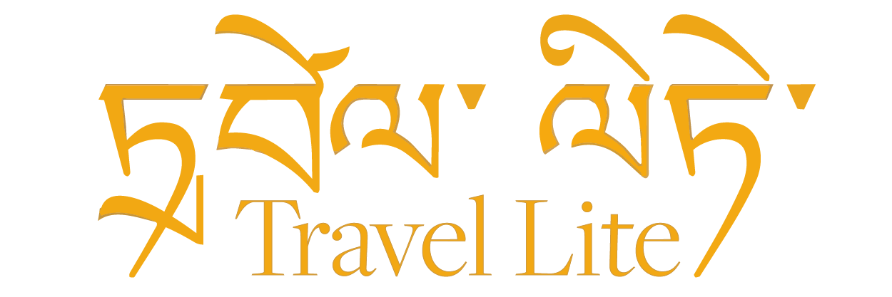
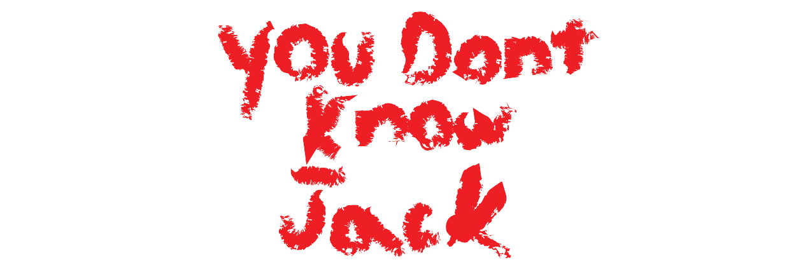
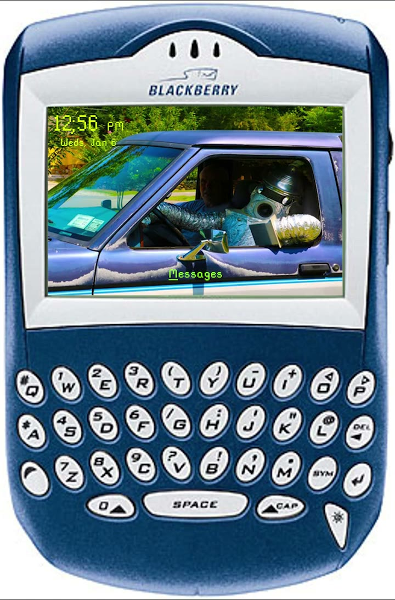
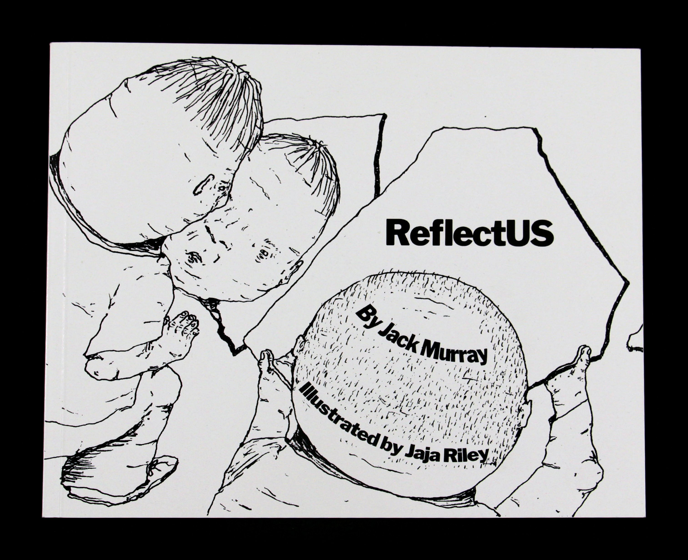
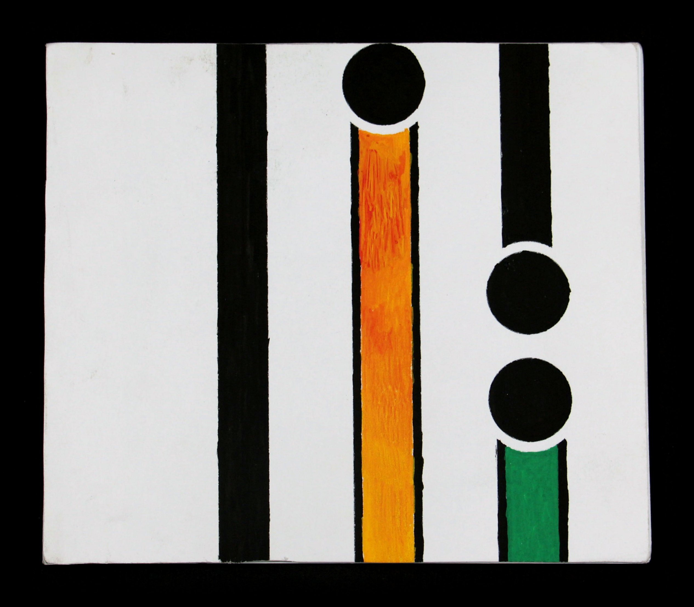
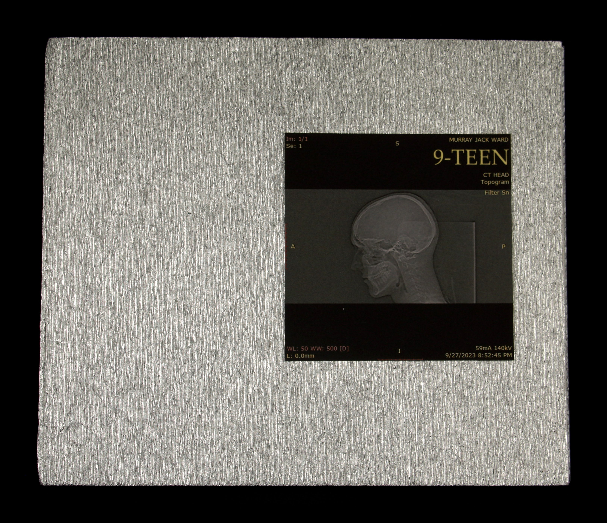

Video
-

Travel Lite
6:26Cinematic Art Film
Three braided stories of creative commitment. Jamie Thomas skating, Midori’s 1986 Tanglewood violin, and a 62-ft violin built from barn trash, visible only from the air.
-

The Farmer’s Value
6:18Research Video Essay
A sourced argument for saving small family farms — the carbon cost of relocating, broken subsidy math, and greenhouse and vertical-farming fixes — told as hand-drawn whiteboard animation.
-

You Don’t Know Jack
4:46Satirical Mockumentary
A fake E! True Hollywood Story–style retrospective that turns the art-school work into one self-aware joke about scrambling a portfolio together in three weeks.
-

Social Bot
0:14Satirical Short
A satire staged as a vintage BlackBerry: an inbox of absurd political spam opening onto a homemade tin-foil robot loose in the suburbs.
Books
-

ReflectUS
36 pagesPolitical Book
A children’s book about the stories America keeps telling itself — written, staged, and designed from a self-made dataset, brought to life in the simple, effective illustration of Jaja Riley.
-

The Creeping Body
50 pagesEditorial & Research
A hand-bound, 50-page publication written, designed, and printed during an intensive semester at Paris College of Art — four essays that turn dense Supreme Court argument into something you can hold and actually read.
-

9-TEEN
6 pages · 3 pop-upsPop-Up & Paper
A handcrafted pop-up book that turns flat photography into sculptural, three-dimensional scenes — exploring identity, place, and scale through the Unisphere in Flushing Meadows.